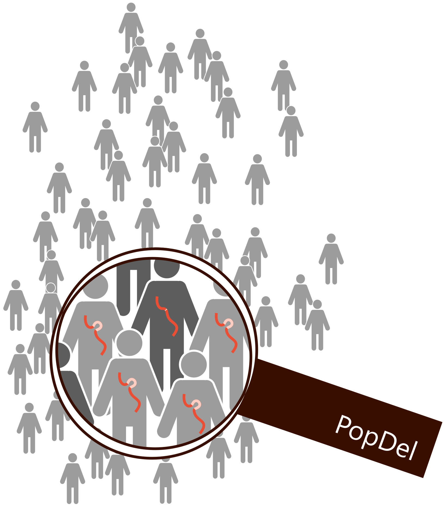
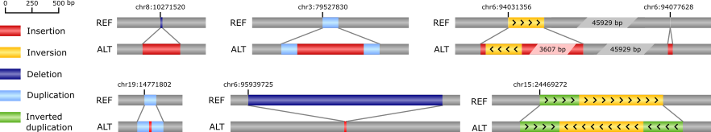
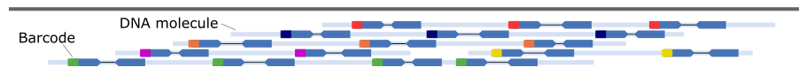

Research
We are a purely computational lab developing new algorithms for solving bioinformatics problems on sequence data. The problems we address include read alignment, variant detection & genotyping, genome assembly, whole-genome alignment and more. We implement our algorithms in new software tools and use them in the analysis of sequence data to gain new insights into human genetics and, since recently, the immune system.
Some of our ongoing projects address:
- Structural variant detection in tens of thousands of genomes simultaneously (PopDel)
- Non-reference sequence found in a subset of genomes in a population (PopIns2)
- Linked read data analysis: Barcode correction, Barcode mapping, Local assembly, and SV detection (bcmap)
- Interactive, exploratory workflows for genome analysis
- Cancer genomics: Rearrangements in neuroblastoma genomes
Structural variant detection
in tens of thousands of genomes simultaneously
|
Our software tool PopDel can simultaneously analyze tens of thousands of (short-read sequenced) genomes for reliably detecting and accurately genotyping structural variants, differences between genomes that affect at least 50 bp of DNA sequence. The current focus of the program is on deleted sequence but we are in the process of extending PopDel to other types of structural variants including inversions, duplications, and translocations. Previously we identified a rare deletion in the LDLR gene using PopDel, which causes extremely low levels of LDL cholesterol in the blood (Björnsson E et al. 2021, Circulation: Genomic and Precision Medicine). Its superior scalability, high accuracy, fast running time, and easy use make PopDel an attractive alternative to previous approaches. At the core of PopDel is a space-efficient (binary) read pair profile format and a structural variant detection algorithm that is based on a likelihood ratio test. More details in Niehus S et al. 2021, Nature Communications Code: https://github.com/kehrlab/PopDel Funded by the BMBF Computational Life Sciences Initiative |
 |
Non-reference sequence
found in a subset of genomes in a population
|
Our software tool PopIns2 (successor of PopIns) identifies a type of genomic structural variants that involves non-repetitive sequence not found in the reference genome. We call these variants “non-reference sequence variants”, or short NRS variants. Previously we could show that the majority of human non-reference sequence is ancestral (and not newly inserted) and described an association of a NRS variant in the SREBF1 gene with myocardial infarction (Kehr et al. 2017, Nature Genetics). The detection of NRS variants from short read data is particularly challenging as it inevitably involves a de novo assembly of the non-reference sequence. We combine data of many individuals simultaneously for reliable NRS assembly. PopIns2 realizes this by representing non-reference sequence data in colored de Bruijn graphs. More details in Krannich T et al. 2021, Bioinformatics

Examples of structural variants called with PopIns in WGS data of 15,219 Icelanders.
|
Linked read data analysis:
Barcode correction, Barcode mapping, Local assembly, and SV detection
|
Our software tools bcmap and bcctools address the analysis of linked read sequencing data. Linked read data provides long-range information through barcode labels on accurate short reads, i.e., all reads labeled with the same barcode originate from a small set of long DNA molecules. Our software tool bcmap efficiently determines genomic intervals of long DNA molecules. We refer to the addressed problem as “barcode mapping”. The output of bcmap enables efficient retrieval of reads from genomic regions of interest without the need to compute a full read alignment. Our barcode mapping approach is significantly faster than read alignment. Bcmap uses an open-addressing k-mer index and minimizers for efficiently determining genomic intervals of sets of reads labeled with the same barcode. Bcctools is a toolbox for pre-processing linked read data. It can trim barcodes from the reads, infer a whitelist of barcodes, and implements an efficient index data structure for retrieving corrected barcode sequences in constant time. Pre-processing linked-read data with bcctools is several times faster than with LongRanger.

Linked reads are short reads with barcode labels that provide information about longer DNA molecules.
Code: https://github.com/kehrlab/bcmap Funded by the DFG, FOR 2841: "Beyond the exome", Project P3 |
Interactive, exploratory workflows
for genome analysis
|
In collaboration with the Weidlich lab at Humboldt Universität in Berlin, we develop interactive workflows that support the exploration of genomic data. Developing a workflow, such as those implemented for PopDel and PopIns2, is usually a dynamic process where various setups and alternatives are tested over a period of time. With the workflows developed in this project, we simplify and systematically document this process while, at the same time, allowing and tracking user intervention during workflow execution.
Funded by the DFG, SFB 1404: "FONDA – Foundations of Workflows for Large-Scale Scientific Data Analysis", Project A6 |
Cancer genomics:
Rearrangements in neuroblastoma genomes
|
In collaboration with the pediatric oncology group led by Prof. Dr. Johannes Schulte at Charité, we study rearrangements in Neuroblastoma genomes. Neurobalstoma is a pediatric tumor affecting the sympathetic nervous system. It is a model cancer predominantly driven by copy number variation in the high-risk cases. Funded by the DFG, GRK 2424: "CompCancer – Computational Methods for Oncology: Towards Personalized Therapies in Cancer" |